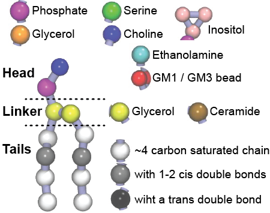

Martini lipids details
Martini lipids follow the general Martini philosophy. Each coarse-grained (CG) bead represents ~4 heavy atoms and based on its underlying atoms and associated overall polarity, hydrophobicity, and charge it is assigned to one of Martini’s predefined bead types (e.g. P1, P2, C1, C2, Qa, Qd, ..). The bead type determines the non-bonded levels of interactions, while bonded interactions (bonds, angles, dihedrals) between beads in the same molecule are normally tuned based on reference atomistic simulations. For more information on Martini philosophy and parameterization see:
- S.J. Marrink, H.J. Risselada, S. Yefimov, D.P. Tieleman, A.H. de Vries. The MARTINI forcefield: coarse grained model for biomolecular simulations. JPC-B, 111:7812-7824, 2007. abstract
- S.J. Marrink, A.H. de Vries, A.E. Mark. Coarse grained model for semi-quantitative lipid simulations. JPC-B, 108:750-760, 2004. abstract
This general building block strategy aims to increase flexibility and transferability of the force field but not to exactly match the atomistic behavior of a given molecule/lipid. This means that each CG lipid can represent a range of atomistic lipids. For Martini lipids mapping and naming schema, see Table 1.
Table 1 | Lipid fatty acid nomenclature.
| One letter names | Bead assignment | Corresponding to atomistic tails | Examples of corresponding fatty acid names |
| C | C | C04:0-C06:0 | C04:0 butyryl - C06:0 hexanoyl |
| T | CC | C08:0-C10:0 | C08:0 octanoyl - C10:0 decanoyl |
| L | CCC | C12:0-C14:0 | C12:0 lauric acid - C14:0 myristoyl |
| P | CCCC | C16:0-C18:0 | C16:0 palmitic acid - C18:0 stearoyl |
| B | CCCCC | C20:0-C22:0 | C20:0 arachidoyl - C22:0 behenoyl |
| X | CCCCCC | C24:0-C26:0 | C24:0 lignoceroyl - C26:0 hexacosanoyl |
| Y | CDC | C12:1-C14:1(9c) | C14:1(9c) myristoleoyl |
| O | CDCC | C16:1-C18:1(9c) | C16:1(9c) palmitoleic acid, C18:1(9c) oleic acid |
| V | CCDC | C16:1-C18:1(11c) | C16:1(11c), C18:1(11c) cis-vaccenic acid, C18:1(12c) |
| G | CCDCC | C20:1-C22:1(11c) | C20:1(11c) gondoic acid, C22:1(11c), C22:1(13c) erucoyl |
| N | CCCDCC | C24:1-C26:1(9c) | C24:1(9c) nervonic acid, C26:1(9c) |
| I | CDDC | C16:2-C18:2(9-12c) | C18:2(9c,12c) linoleic acid |
| F | CDDD | C16:3-C18:3(9-15c) | C18:3(9c,12c,15c) octadecatrienoyl |
| E | CCDDC | C20:2-C22:2(11-16c) | C20:2(11c,14c) eicosadienoic acid, C22:2(13c,16c) docosadienoic acid |
| Q | CDDDC | C20:3-C22:3(5-14c) | C20:3(5c,8c,11c) mead acid, C20:3(8c,11c,14c) dihomo-gamma-linolenic acid |
| A | DDDDC | C20:4-C22:5(4-16c) | C20:4(5c,8c,11c,14c) arachidonic acid, C22:5(4c,7c,10c,13c,16c) docosapentaenoic acid |
| U | DDDDD | C20:5-C22:6(4-19c) | C22:6(4c,7c,10c,13c,16c,19c) docosahexaenoic acid |
| R | DDDDDD | C24:6-C26:6(6-21c) | C24:6(6c,9c,12c,15c,18c,21c) nisinic acid |
| J | TCCC | C16:1-C18:1(3t) | C16:1(3t) trans-3-hexadecanoic acid |
| Pa | TCC | C(d16:1)-C(d18:1) | Sphingosine C16 palmitic acid - C18 stearoyl with a trans double bond |
| Ba | TCCC | C(d20:1)-C(d22:1) | Sphingosine C20 arachidoyl - C22 behenoyl with a trans double bond |
| Xa | TCCCC | C(d24:1)-C(d26:1) | Sphingosine C24 lignoceroyl - C26 hexacosanoyl with a trans double bond |
Each CG bead represents ~4 carbon atoms, therefore, the underlying atomistic mapping is not unique ranges and a few examples are given for each case. The C beads represent a saturated carbon chain, the D beads have 1-2 cis double bounds, and the T beads have a trans double bound. D stands for Di and is used for lipids tails with two of the same fatty acids, e.g. DPPC has two P tails and DOPC has two O tails. aThese tails are for sphingosine lipids and have one C bead less as a few of the first fatty acid carbons are part of the AM1 linker bead.
A large number of lipids have been parameterized for Martini and their description and examples of use can be found in their respective publication, such as:
T.A. Wassenaar, H.I. Ingólfsson, R.A. Böckmann, D.P. Tieleman, S.J. Marrink. Computational lipidomics with insane: a versatile tool for generating custom membranes for molecular simulations. JCTC, 11:2144–2155, 2015. abstract
H.I. Ingólfsson, M.N. Melo, F.J. van Eerden, C. Arnarez, C.A. López, T.A. Wassenaar, X. Periole, A.H. De Vries, D.P. Tieleman, S.J. Marrink. Lipid organization of the plasma membrane. JACS, 136:14554-14559, 2014. open access
F.J. van Eerden, D.H. de Jong, A.H de Vries, T.A. Wassenaar, S.J. Marrink. Characterization of thylakoid lipid membranes from cyanobacteria and higher plants by molecular dynamics simulations. BBA Biomembranes, 1848:1319–1330, 2015. abstract
C.A. Lopez, Z. Sovova, F.J. van Eerden, A.H. de Vries, S.J. Marrink. Martini force field parameters for glycolipids. JCTC, 9:1694–1708, 2013. abstract
H.J. Risselada, S.J. Marrink. The molecular face of lipid rafts in model membranes. PNAS, 105:17367-17372, 2008. open access
S.J. Marrink, A.H. de Vries, T.A. Harroun, J. Katsaras, S.R. Wassall. Cholesterol shows preference for the interior of polyunsaturated lipid membranes. JACS, 130:10-11, 2008. abstract
S. Baoukina, L. Monticelli, H.J. Risselada, S.J. Marrink, D.P. Tieleman. The molecular mechanism of lipid monolayer collapse. PNAS, 105:10803-10808, 2008. open access
Additionally, for each lipid a description, a short parameterization section, and relevant references are provided on each lipid’s webpage and in their topology file. For most of the available Martini lipid topologies an initial coordinate file is provided as well as an image for quick reference; these images try to follow the color schema shown in Figure 1.

Figure 1 | Martini lipid layout and figure colors.